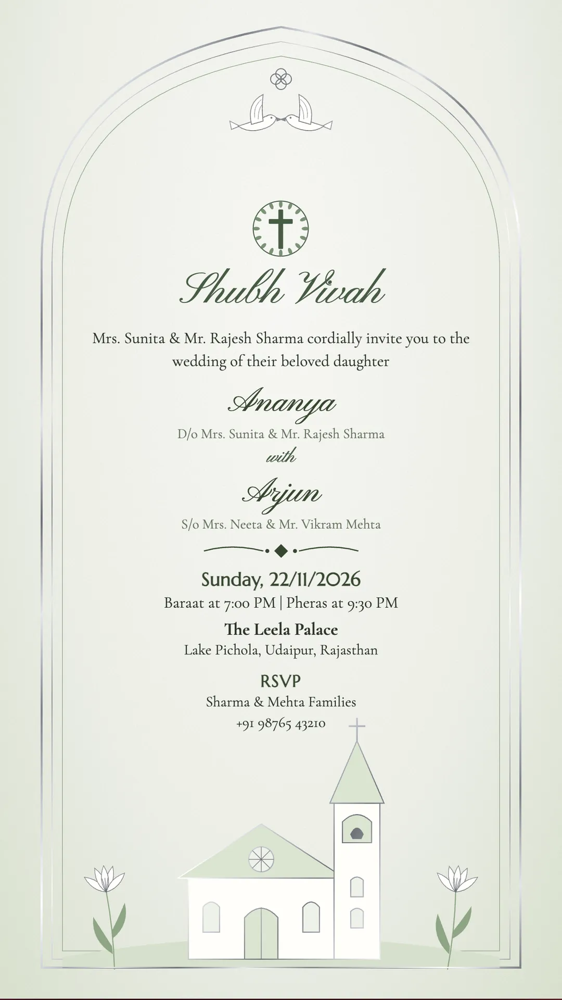
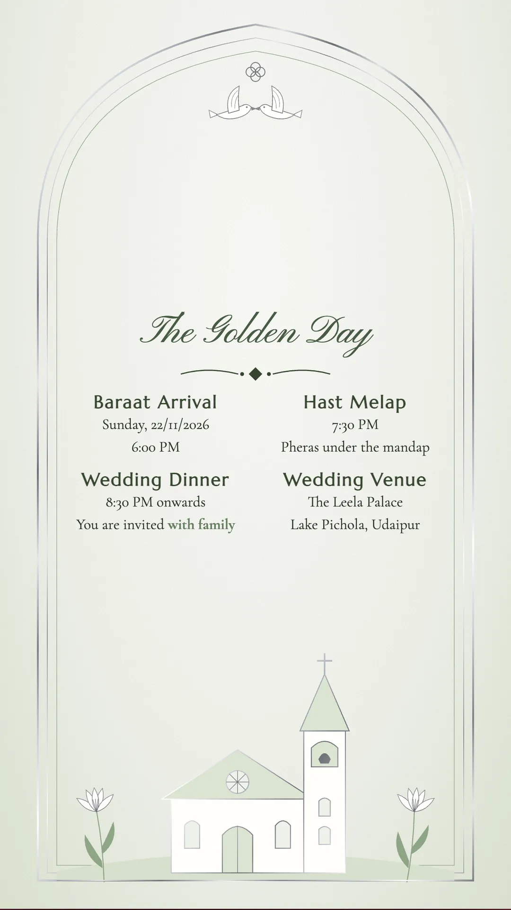

Designs › Wedding (Vivah) › White Chapel Silver Arch
White Chapel Silver Arch: English Christian wedding invitation

- Ceremony: Wedding (Vivah)
- Language: English
- God or sacred symbol: Christian (cross)
- Format: WhatsApp image (1080 x 1920 px) and 5 x 7 inch print PDF
- Pages: 6 (cover, functions, wedding-day programme, letter, family names, closing message)
About this design
The palest sage green, almost white at the centre, with a tall pointed gothic arch drawn in two silver lines and a thin sage line inside them. At the top of the arch, two white doves face each other beak to beak under a small silver quatrefoil. At the bottom stands a white chapel with a sage roof, a round window above the door and a bell tower topped with a cross, on a small green mound between two white lilies.
There is no Hindu invocation on this card. A cross in a ring sits where other cards put the Ganesha emblem, the title and names are in sage green Pinyon Script, and the rest is in a dark grey-green serif.
Change the wording before you send it. The sample text is the general English wedding sample shared by all the English designs, so the title reads Shubh Vivah, the time line mentions a baraat and pheras, and the venue is a hotel in Udaipur. For a church wedding, change the title to something like The Wedding of or Holy Matrimony, write the service time and the church, and add the reception venue. The inner pages (functions, wedding-day programme, letter, family names and closing message) need the same edit, and you can delete any page you do not need.
It suits Christian families in India and Indian couples marrying in a church abroad, for a daytime service or an evening one. The colours are soft and light, close to white wedding flowers. If you want a Malayali card without a cross, Kerala Kasavu Gold Border has no religious line, and Ivory Monogram Minimal makes a matching save-the-date.
All 6 pages
The cover is shown above. These are the other pages exactly as the card opens in the editor, with the sample family names.




Sample wording on this card
The cover opens in the editor with this text. It is the shared English sample, so rewrite the title and programme for a church wedding.
Shubh Vivah
Mrs. Sunita & Mr. Rajesh Sharma cordially invite you to the wedding of their beloved daughter
Ananya
D/o Mrs. Sunita & Mr. Rajesh Sharma
with
Arjun
S/o Mrs. Neeta & Mr. Vikram Mehta
Sunday, 22/11/2026
Baraat at 7:00 PM | Pheras at 9:30 PM
The Leela Palace
Lake Pichola, Udaipur, Rajasthan
RSVP
Sharma & Mehta Families
+91 98765 43210
The other five pages are Auspicious Beginnings (the functions before the wedding), The Golden Day (the wedding-day programme), Parinayotsav (the letter), Eagerly Awaiting You (the family names) and A Digital Invitation (the closing message).